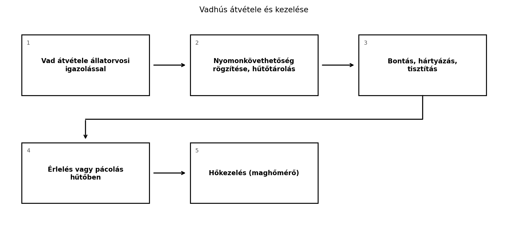

Egyszercsak őzgerinc, vaddisznócomb vagy fácán érkezik a konyhára. A vendég kifejezetten vadételeket kér, de a vadhús más törődést igényel, mint a házisertés vagy a csirke. Ha a húst nem megfelelően veszed át, nem vizsgálod meg a származását, vagy nem pácolod, akkor az étel rágós, kellemetlenül „vadízű” lesz, vagy ami rosszabb, élelmiszer-biztonsági kockázatot hordoz. Ebben az alfejezetben a vadak csoportosítását, a vadhús kezelését, érlelését és pácolását tanulod meg.
Képzeld el, hogy egy erdei vendéglő konyháján dolgozol. Megérkezik a beszállító, és hoz egy fél vaddisznót, valamint néhány fácánt. A séf nem veszi át az árut azonnal. Először elkéri az állatorvosi igazolást, megnézi a szállítási hőmérsékletet, majd ellenőrzi a hús színét, szagát, állagát. Vérnyomokat, idegen szennyeződést keres. Ha bármelyik nem megfelelő, az árut visszaküldi. A séf azt mondja: „A vadhúst nem a konyhaasztalon kezdjük el kezelni, hanem már az átvételnél.” Ez a hozzáállás élelmiszer-biztonsági alapkövetelmény.

Definíció. A vad olyan, vadon élő, emberi táplálkozásra alkalmas állat, amelyet vadászattal ejtettek el, vagy vadaskertben, zárt téren neveltek vadászati céllal. A vadak húsát vadhúsnak, a belőlük készült ételeket vadételeknek nevezzük.
A szakácsképzésben a vadakat két nagy csoportba osztjuk:
Táblázat. A vadak csoportosítása és tipikus ételfelhasználása:
| Csoport | Példafajok | Húsuk jellemzője | Tipikus felhasználás |
|---|---|---|---|
| Nagyvad – szarvasfélék | gímszarvas, dámvad, őz | sötét, sűrű rostú, alacsony zsírtartalmú | egészben sütve, gerinc, comb párolva, ragu |
| Nagyvad – vadjuh | muflon | sötétebb, jellegzetes ízű hús | sütés, párolás, pörkölt |
| Nagyvad – vaddisznó | vaddisznó | sötét, erőteljes ízű, kissé több bőr alatti zsír | pörkölt, párolt comb, sült csülök, raguleves |
| Apróvad – szőrmés | mezei nyúl, üregi nyúl | mezei nyúl: sötétvörös, sovány; üregi nyúl: világosabb, finom rostú (ellenőrizendő: vadhús-áruismeret) | párolva, ragu, pástétom |
| Apróvad – szárnyas | fácán, fogoly, vadkacsa, vadlúd | ízletes, sötét húsú, mell és comb eltérő | egészben sütve, párolva, raguleves, pástétom |
A vadhús megnevezésében a faj pontos megnevezése fontos: az „őz” nem „szarvasborjú”, a „vaddisznó” nem „sertés”. A vendéglátóban az étlapon és az allergén/tájékoztató anyagokban is pontosan kell szerepelnie a fajnak.
A vadhús általában:
Táplálkozástani szempontból a vadhús kedvező:
Megjegyzés. Az alacsony zsírtartalom miatt a vad húsa könnyen kiszárad, ha túlsütjük. A tipikus vadételeknél ezért gyakran használunk szalonnát, olajat, páclevet, illetve hosszú, alacsony hőmérsékletű párolást.
Jogszabály. A vad értékesítése és vendéglátó-ipari felhasználása csak az élelmiszer-higiéniai rendeletek (852/2004/EK, 853/2004/EK) szerinti, megfelelően előkészített vadból történhet. A vad húsának biztonságosságát állatorvosi vizsgálattal kell ellenőrizni. A konkrét vizsgálati kötelezettséget és az engedélyezett vadaskerti/kifőzdei beszerzést a hatályos hazai vadászati és élelmiszer-biztonsági előírások szabályozzák (ellenőrizendő: hatályos jogszabályok és NÉBIH-útmutatók).
Kritikus pont. A vadhús átvételekor az alábbiakat kell ellenőrizni és dokumentálni:
| Ellenőrzési szempont | Miért fontos | Kritikus határ / megkövetelt állapot |
|---|---|---|
| Állatorvosi vizsgálat | csak egészséges, vizsgált vadhús kerülhet konyhára | vadászati/állatorvosi igazolás megléte |
| Trichinella-vizsgálat vaddisznónál | a trichinellózis (izomféreg) súlyos élelmiszerfertőzést okozhat | negatív laboreredmény, vaddisznónál kötelező (ellenőrizendő: a vizsgálati kötelezettség fajonkénti szabálya) |
| Hűtőlánc | a baktériumok szaporodásának lassítása | 0–5 °C közötti szállítási hőmérséklet (ellenőrizendő: a hatályos hűtési előírás) |
| Nyomonkövethetőség | visszakereshető legyen a vad forrása | szállítójegy, tételazonosító, kilövési/vizsgálati adatok |
| Érzékszervi állapot | a romlott hús veszélyes és élvezhetetlen | friss szín, kellemes szag, rugalmas állag, nem nyálkás felület |
Tilos. Tilos olyan vadhúst a konyhára venni, amelynek nincs megfelelő állatorvosi igazolása, ismeretlen helyről származik, vagy nem volt legalább hűtve szállítása közben. A vaddisznó húsát trichinella-vizsgálat negatív eredménye nélkül felhasználni tilos.
Higiénia. A vad húsának átvételét a konyhán úgy végezd, hogy a nyers vadhús ne érintkezzen kész étellel, zöldséggel, fűszerekkel. A vadhús csomagolását, vérnedvét ne hagyd a munkalapon. A vadhúsnak külön, zárható hűtőtárolóját vagy jól elkülönített polcát használj, lehetőleg a hűtő alján, hogy a lé ne csöpögjön más élelmiszerre.
Továbbvitt eredmény. A vadhús átvételi és kezelési szabályát később, a Baromfi, vad és hal előkészítése és a Nagyvadak ételei alfejezetekben használjuk fel. Az átvételnél dől el, hogy a hús biztonsággal a konyhába kerülhet-e; az érlelés és a pácolás ott lesz meghatározó a vadételek ízénél és állagánál.
A vad húsát a kilövés után mielőbb fel kell dolgozni: megvérezni, kizsigerelni, majd lehűteni. A vad elhullott, nem vadászott állat húsa nem kerülhet vendéglátó forgalomba. A frissen lőtt vadat szállítás előtt is hűvösen, szellősen kell tartani.
A konyhára érkező vadhúst kezelése lépésről lépésre:
Páclé összetétele. A klasszikus vadpáchoz gyakran használnak vörösbort vagy borecetet, vizet, olajat, sárgarépát, vöröshagymát, zellert, fokhagymát, babérlevelet, borókabogyót, egész borsot, kakukkfüvet. A páclé savassága lazítja a fehérjéket, az olaj és a gyógynövények ízt adnak, a zöldségek pedig a mártáshoz is alapot képeznek.
Figyelem. A páclevek gyakori allergénjei: zeller, mustár (ha mustármagot vagy mustárt teszel bele), kén-dioxid és szulfitok (bor, borecet), szójabab és glutént tartalmazó gabonafélék (szójaszósz), esetenként tej (tejfölös pác). Ha a vendég allergiás, a páclevet is pontosan fel kell tüntetni a tájékoztatásban.
Adott. Egy vaddisznócomb bruttó tömege . Tisztításkor a hártyák, inak, lövési sérült rész és faggyús szövet együttes vesztesége .
Keresett. A nettó hús tömege , valamint a páclé tömege, ha a nettó hús tömegével azonos mennyiségű () páclevet akarunk önteni rá, hogy a hús ellepődjön (tanulási érték; ellenőrizendő: üzemi receptúra).
Képlet. A nettó tömeg:
Behelyettesítés.
A páclé tömege:
Ellenőrzés. A veszteség tömege . Ez a bruttó tömeg , vagyis , tehát a számítás helyes. A páclé kb. vízhez hasonló térfogatú, de a pontos tömege az alkotóanyagok sűrűségétől függ.
A friss vadhús minőségi jelei:
Az érlelt, pácolt vadhús felülete megbarnulhat, ami természetes oxidáció; ez önmagában nem hiba, ha a szaga friss és a hús hűtve volt.
Egy erdei fogadóban vaddisznó-vacsorát hirdettek. A konyhai dolgozó átvette a beszállítótól a hűtetlen dobozban érkező vaddisznócombot, de az állatorvosi papírt nem kérte el. A séf később észrevette, hogy a hús felülete nyálkás, és a csomagolás vérnedve átfolyt a hűtőtérben. Az árut azonnal félretették, a hűtőt áttörölték, fertőtlenítették, és a beszállítót visszahívták. Kiderült, hogy a szállítmány nem volt megfelelően hűtve, és a vizsgálati bizonylatot sem csatolták. A vacsorát más, megbízható szállítótól származó fagyasztott vadcombból készítették el. Tanulság: az átvételkor ellenőrzött dokumentum és hőfok nem papírmunka, hanem a vendég és a konyha védelme.
A válaszokat a Megoldások elején „Önellenőrzés – válaszok” alcím alatt találod.
1. feladat (A). Csoportosítsd a következő vadfajokat nagyvad és apróvad szerint: gímszarvas, mezei nyúl, vaddisznó, fácán, őz, fogoly, muflon, vadkacsa.
2. feladat (A). Magyarázd meg, mi a trichinella, és miért kötelező a vaddisznó húsának vizsgálata.
3. feladat (B). Állítsd sorba a vadhús konyhai kezelésének helyes lépéseit: pácolás, bontás/tisztítás, hűtés/tárolás, szárítás, érlelés, átvétel. Írd mindegyik mellé a legfontosabb higiéniai szempontot.
4. feladat (B). Számítsd ki, mennyi nettó húst kapsz 4,8 kg vaddisznólapockából, ha a tisztítási veszteség 20 %.
5. feladat (C). Tervezz páclevet őzgerinchez. Nevezd meg az összetevőket, az allergéneket, és írd le, hogyan kerülhet a pác később a mártásba biztonságosan.
6. feladat (D). Hibaelemzés: Egy dolgozó a pácolt vaddisznócombot éjszakára a konyhapulton felejtette. Másnap reggel a hús szobahőmérsékletű, felülete tapadós. Mi a lehetséges hiba következménye, és mi a helyes eljárás?
Önellenőrzés – válaszok
Feladatok megoldásai
A vadak két nagy csoportja a nagyvad (gímszarvas, dámszarvas, őz, vaddisznó, muflon) és az apróvad (mezei nyúl, fácán, fogoly, vadkacsa). A vadhús sötét, sűrű rostú, alacsony zsírtartalmú, magas biológiai értékű fehérjét, vasat, cinket és B-vitaminokat tartalmaz. Átvételkor kötelező az állatorvosi vizsgálati bizonylat, a trichinella-vizsgálat (különösen vaddisznónál), a hűtőlánc (0–5 °C, ellenőrizendő: pontos érték) és a nyomonkövethetőség ellenőrzése. A vadhúst tisztítás után érlelni (2–7 nap hűtőben, ellenőrizendő: idő), majd pácolni kell hűtőben (12–48 óra, ellenőrizendő: idő). A pácból kivett húst szárazra kell törölni; a felhasznált pác csak forralás, hőkezelés után kerülhet mártásba. A vadhúst maghőmérővel ellenőrzött hőfokra hőkezeljük (tanulási érték legalább 75 °C, ellenőrizendő: NÉBIH-útmutató / HACCP-terv); a vaddisznóhúst mindig teljesen átsütjük. Továbbvitt eredmény. A vadhús átvételi és kezelési szabályát a Baromfi, vad és hal előkészítése és a Nagyvadak ételei alfejezetekben használjuk fel: az átvétel dönti el a biztonságos konyhai használatot, az érlelés és a pácolás pedig a vadételek ízét és állagát határozza meg.